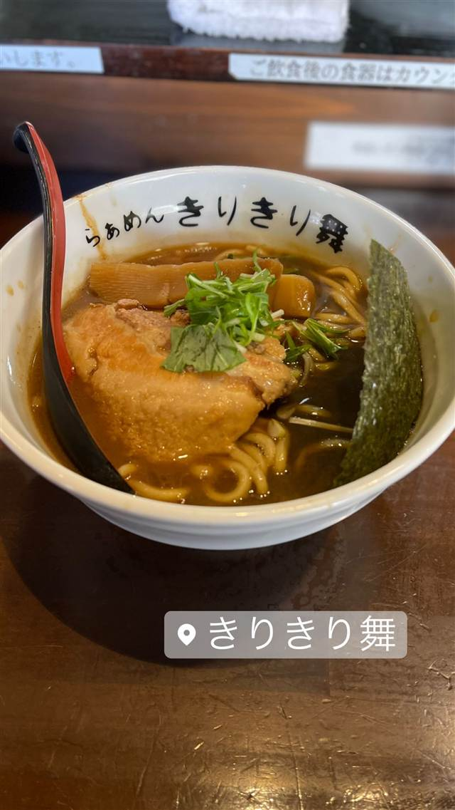

きりきり舞（葉月直系 らぁめん きりきり舞）
鶏と魚介の動物系スープに厚切りメンマの極太麺
きりきり舞
WHY GO
雪が谷大塚「らぁめん葉月」唯一ののれん分け店で系譜を継ぐ一軒
人に属している
「葉月直系 らぁめん きりきり舞」は、雪が谷大塚の人気店「らぁめん葉月」の不動前店として2011年に開店し、後に店長が独立して現在の屋号になった唯一の直系店です。豚骨ではなく鶏と魚介を合わせた「動物×魚介」スープに、極太の自家製麺と厚切りメンマを合わせるのが特徴です。
TRIVIA
へえ、という話
- 木曜限定で「超絶濃厚鶏そば きりすて御麺」という間借りブランドをランチのみ営業（2021年10月〜）
- メンマは都内では珍しいほどの厚切りで提供される
REVIEWS
みんなの声
92.996ラーメンDB3.56食べログ
「濃厚動物魚介系とドロ系スープ」に注目
- 葉月直系ならではの粘度ある動物魚介系の濃厚なスープを評価する声が多い
- 煮干しが香る豚魚系のスープとゴワつく太麺の相性を評価する意見がある
- 訪問時によってスープにわずかな酸味を感じることがあるという声もある
- チャーシューの仕上がりが以前より潤いに欠けると感じる人もいるようだ
ラーメンデータベース 口コミ147件・総合866位・最新 2026-09
| 創業 | 「らぁめん葉月」不動前店として2011年4月5日に開店し、後に店長が独立して「葉月直系 らぁめん きりきり舞」となった |
|---|---|
| 系譜 | 雪が谷大塚の人気店「らぁめん葉月」の直系一号店（唯一ののれん分け店） |
| 看板 | らぁめん（動物×魚介のスープ） |
| こだわり | 豚骨ではなく鶏（丸鶏・チャーシューの鶏ジュ）と魚介を合わせた動物×魚介スープ、極太多加水の自家製麺、都内でも珍しい厚切りメンマ |
| どこから | 23区の外れ・近郊 |
| いつ行けるか | 行列 |
| 予算 | 昼 ～¥999 夜 ～¥999 |
| 定休日 | 月曜・第1火曜 |
| 場所 | 不動前 東京都品川区小山台1-33-11 |
| 注意 | 食券制、カウンター席のみ、ランチタイムは行列ができる |
食べたもの：ラーメン
NEARBY
近い店・同じ系統の店
-
 ★
家系 本厚木駅
厚木家
家系総本山「吉村家」創業者の実子が営む直系の一杯
昼 ～¥999 夜 ～¥999
★
家系 本厚木駅
厚木家
家系総本山「吉村家」創業者の実子が営む直系の一杯
昼 ～¥999 夜 ～¥999
-
 ★
家系 白楽駅
ラーメン 末廣家
吉村家直系、吊るし焼きチャーシューが看板の家系
夜 ～¥999
★
家系 白楽駅
ラーメン 末廣家
吉村家直系、吊るし焼きチャーシューが看板の家系
夜 ～¥999
-
 ★
家系 蒲田
らーめん飛粋（HIIKI）
国産豚骨と鶏ガラを別炊きにしたマイルドな家系ラーメン
昼 ¥1,000～¥1,999 夜 ¥1,000～¥1,999
★
家系 蒲田
らーめん飛粋（HIIKI）
国産豚骨と鶏ガラを別炊きにしたマイルドな家系ラーメン
昼 ¥1,000～¥1,999 夜 ¥1,000～¥1,999
-
 ★
家系 横浜駅
家系総本山 吉村家
元トラック運転手が1974年に開いた家系ラーメンの総本山
昼 ¥1,000～¥1,999 夜 ¥1,000～¥1,999
★
家系 横浜駅
家系総本山 吉村家
元トラック運転手が1974年に開いた家系ラーメンの総本山
昼 ¥1,000～¥1,999 夜 ¥1,000～¥1,999
-
 ★
家系 神田
神田ラーメン わいず（神田本店）
修行先譲りの濃厚豚骨醤油スープと三河屋製麺の多加水太麺
昼 ¥1,000～¥1,999 夜 ¥1,000～¥1,999
★
家系 神田
神田ラーメン わいず（神田本店）
修行先譲りの濃厚豚骨醤油スープと三河屋製麺の多加水太麺
昼 ¥1,000～¥1,999 夜 ¥1,000～¥1,999
-
 ★
家系 末広町駅
王道家直系 IEKEI TOKYO
家系四天王「王道家」の直系、東京店だけの自家製麺
昼 ～¥999 夜 ～¥999
★
家系 末広町駅
王道家直系 IEKEI TOKYO
家系四天王「王道家」の直系、東京店だけの自家製麺
昼 ～¥999 夜 ～¥999